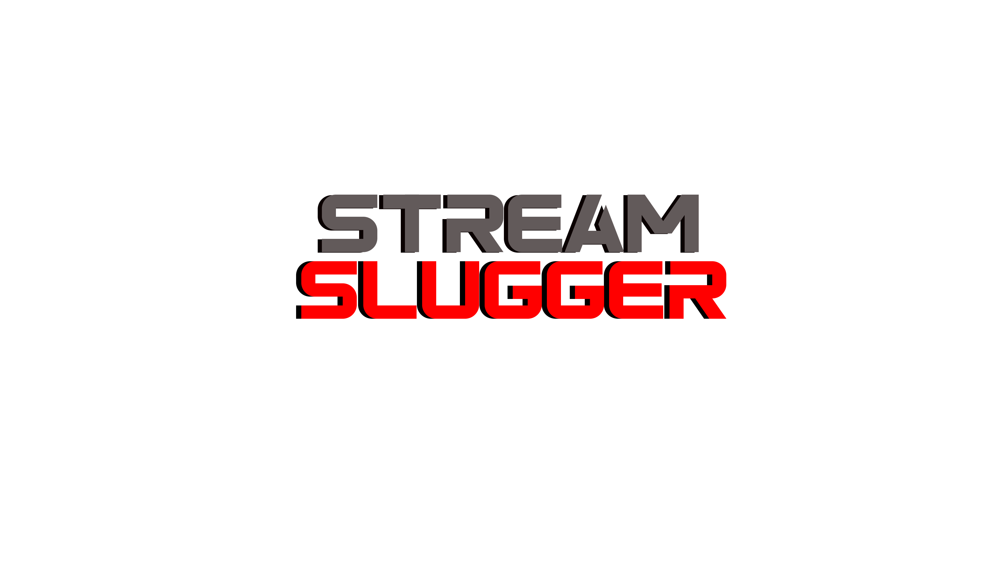

Welcome to Stream Slugger
Let's Play with Friends during your Twitch Live Streams.
 🎮 Get Stream Slugger on SteamStream Slugger — Bring Your Twitch Stream to Life with Interactive 3D Characters
Elevate your livestream with Stream Slugger, the next-generation toolkit designed for streamers who want to captivate their audience. Embed fully animated 3D avatars that respond to chat commands, trigger exciting boss fights, deliver healing, and create a dynamic, immersive viewer experience. Whether streaming solo or with your community, Stream Slugger transforms your broadcast with interactive overlays and engaging gameplay elements.
Why Choose Stream Slugger?
- Real-time interactive 3D characters that respond to chat input.
- Unique gameplay features like boss fights and power-ups.
- Easy integration with Twitch.
- Boost viewer engagement and grow your channel with innovative interactivity.
Get started today and turn every stream into an unforgettable adventure!
Documentation
📘 Learn how to set up boss fights, power-ups, and chat commands in our user guide.
Features
- Interactive 3D Characters
- Chat-Driven Boss Fights
- Healing and Power-Ups
- Customizable Overlays
- Easy Twitch Integration
Get Started Now!
Ready to take your stream to the next level? Download Stream Slugger today and start engaging your audience like never before!
Download on Steam